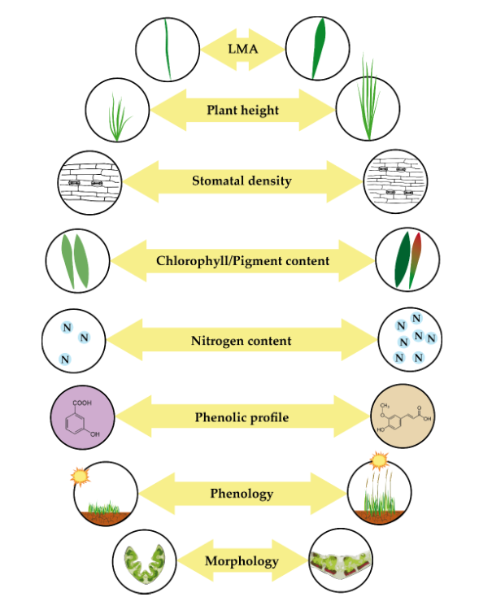
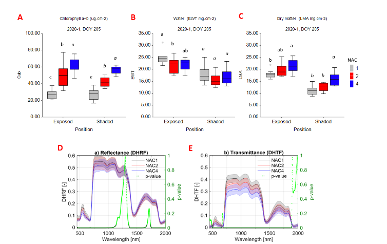
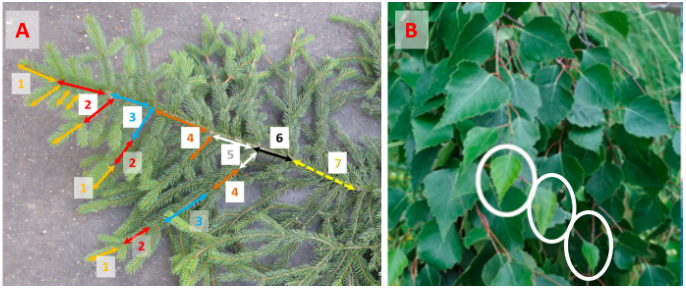
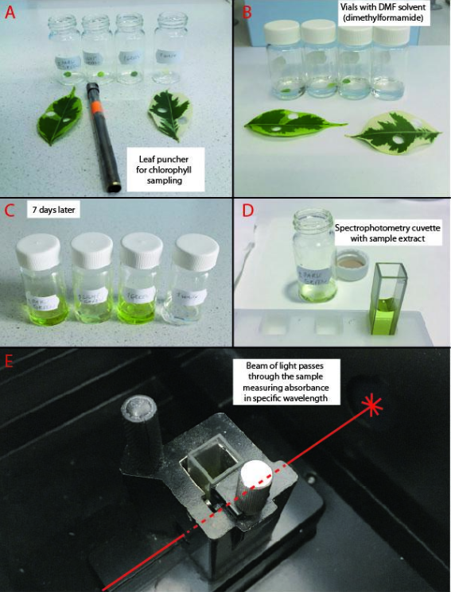
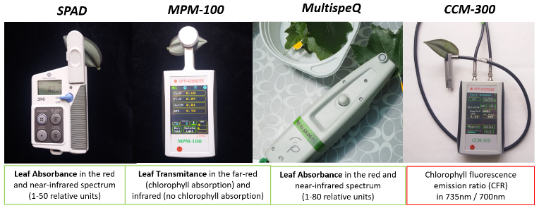
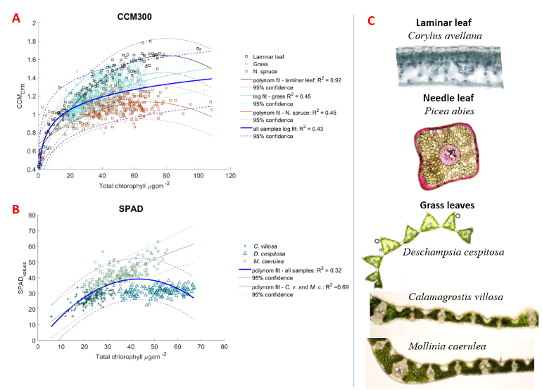
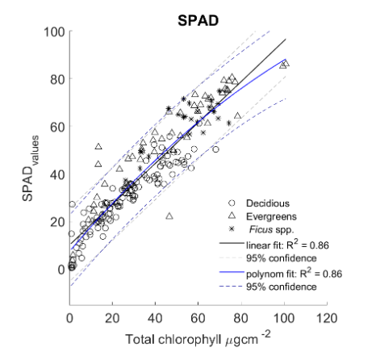
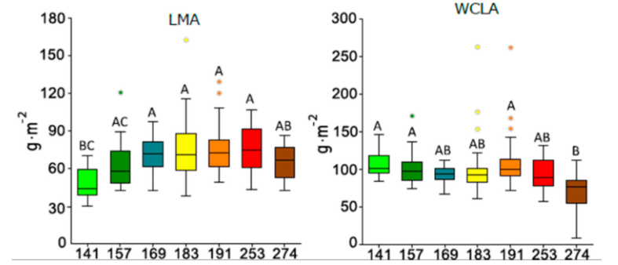
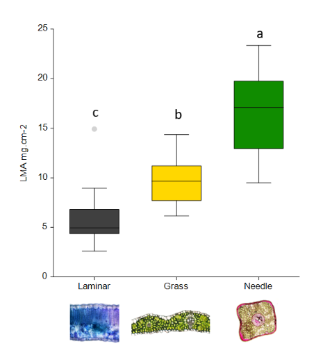

Relating imaging spectroscopy and in-situ or laboratory measurements of vegetation properties
Imaging spectroscopy enables us to characterise the properties of vegetation in a certain area of an ecosystem via electromagnetic radiation spectra derived from image data. Imaging spectroscopy at the hyperspectral level allows for a detailed study of vegetation’s spectral characteristics, providing more data than the multispectral level. Each pixel captured by imaging spectroscopy contains information on the spectral signature of objects it contains. The spectral signature of objects covered by the pixel are expressed by a spectral curve, as described in the principles of laboratory spectroscopy. The detail provided by this method makes it possible to retrieve data about the biophysical properties of vegetation (a subset of leaf functional traits) on a large scale, such as an entire ecosystem or geographic region. Leaf functional traits, such as pigment and water content, serve as important indicators of plant physiological status and can be used for monitoring vegetation states over time (Švik et al., 2023). Imaging spectroscopy allows for the non-destructive and repeatable monitoring of vegetation and, thus, offers an efficient way to map and monitor leaf functional traits. Satellite-based retrieval of functional traits can provide a direct link between local-scale functional trait variation and regional-scale ecosystem function estimation since such retrieval can be repeated across time and space, and is capable of producing fine-resolution data across broad areas (see the review articles for more reading (Asner et al., 2015; Hill et al., 2019; Homolová et al., 2013; Ustin et al., 2009; Ustin and Gamon, 2010). Retrieval of leaf functional traits from optical data instead of in-situ or laboratory analyses of sampled foliage brings remarkable time and labour cost savings and has been intensively used in recent decades (see rev. (Hill et al., 2019). Optical methods for detecting functional vegetation traits are tightly coupled to the phylogenetic and genetic backgrounds of plants, enabling the study of plant biodiversity (Cavender-Bares et al., 2020). Moreover, functional vegetation traits are also linked to belowground processes and the structure and function of microbial communities, which can be a challenge for current multidisciplinary research (Cavender-Bares et al., 2022).
Objectives
In this theme, you will learn about:
- leaf functional traits: biophysical and structural parameters of vegetation and their ecological significance
- laboratory and in-situ measurements of leaf functional traits: vegetation parameters (chlorophyll, LMA, water content)
After finishing this theme you will be able to:
- understand significance of functional leaf traits retrieved from imaging spectroscopy
- understand how to design “ground truth” sampling of vegetation (trees)
- measure leaf functional traits in-situ or in the laboratory for ground truth acquisition
Introduction to leaf functional traits and their ecological significance
Leaf functional traits refer to key chemical, structural, morphological, and physiological characteristics of plant leaves that contribute to indirectly plant fitness (growth, survival, and reproduction) (Violle et al., 2007). Investigations into functional traits aim to recognize the ecological and evolutionary underpinnings of why plants “behave” as they do: why they grow in some places and not others, and how they interact with their biotic and abiotic environment (Reich, 2014). Some commonly investigated leaf functional traits include chlorophyll content, leaf mass per area (LMA), non-photosynthetic pigment accumulation, stomatal density, nitrogen content, phenology, and morphology (Figure 1 ).
- Chlorophyll content functions as a proxy for leaf photosynthetic capacity. High chlorophyll content is positively correlated with high photosynthetic capacity and changes in chlorophyll content may reflect stress or nutrient deficiencies (such as N, or Mg).
- LMA refers to the ratio between leaf dry mass and leaf area. This morphological trait works well as an indicator of where a plant falls on the “leaf economic spectrum” in terms of resource acquisition. LMA is correlated with maximum photosynthetic rate, growth potential, and even decomposition rate (de la Riva et al., 2016).
- Non-photosynthetic pigments include anthocyanins (typically red, purple, or blue, depending on pH), carotenoids (orange) and flavonoids (yellow). The concentration of non-photosynthetic pigments is indicative of a leaf’s capacity to endure certain types of environmental stress, such as high light, UV radiation, temperature extremes, and even pathogen attack. Carotenoids function to dissipate excess light energy (e.g., via the xanthophyll cycle) while anthocyanins and flavonoids provide a range of protective functions, notably absorbing UV radiation and acting as antioxidants.
- Stomatal density is influenced by genotype, light conditions, and atmospheric CO2 levels. Low stomatal density may reduce transpiration water loss, however, high stomatal density allows for a more calibrated response to environmental conditions.
- Nitrogen content is essential for producing major cellular components of photosynthesis, such as chlorophyll, thylakoid proteins, and enzymes involved in CO2 fixation (notably ribulose 1-5 bisphosphate carboxylase/oxygenase). Nitrogen content is correlated with photosynthetic capacity, and can also be analysed to diagnose nutrient deficiencies.
- Phenology refers to the movement of plants through stages in their growing season. How early or late a plant accumulates secondary metabolites or begins to flower can have implications for that plant’s success. Phenology is particularly important with remote sensing as accurate species identification depends on knowing how a plant changes over its life cycle.
- Morphology is a deceptively simple trait that plays a role in how well-suited a species is to its environment, and changes in morphology can occur as a result of specific stressors influencing the phenotypic plasticity of a species. Moreover, leaf morphology should be taken into account when planning experiments as not all physiological instruments are suited to all leaf morphologies.
Each functional trait represents a physiological or morphological trade-off the plant is making. The theory of the “plant economic spectrum” provides a framework for evaluating species according to their trade-offs — strategies of rapid acquisition or resource conservation (Freschet et al., 2010). In general, resource-limiting environments favour slower growth rates, long leaf lifespans, high LMA. Conversely, in environments where water, light, or nutrients are available, the selective pressure of competition favours short lifespans, high photosynthetic rates, low LMA and leaf nitrogen content. Functional traits help explain the distributions of plant species and communities across gradients of light, water, and nutrient availability. Analysis of leaf functional traits may also highlight specific adaptations that benefit a given plant in its environment by comparing stress levels among plants exposed to the same conditions. Investigating sites with known constraints, such as low nutrient availability or high UV exposure, can reveal which leaf characteristics are preferentially selected by that environmental stressor. Locally adapted genotypes show a minimized range of potential leaf traits (Read et al., 2014).

Figure 1: Overview of common leaf function traits which exist on a spectrum. From top to bottom, LMA (leaf mass per area) refers to how dense a leaf is, i.e., how much biomass it has accumulated per unit of area. Leaves with low LMA tend to grow faster and require less investment from the plant, while leaves with a higher LMA tend to are more long-lasting and have more structural compounds, such as lignin and cellulose, bound up in them. Plant height affects how a plant can compete in its environment. Tall plants have an advantage for capturing light for photosynthesis, however, low growing plants may have other advantages such as rapid horizontal spread. Stomatal density is an integral component to gas exchange and water relations in plants and is a trait which shows a lot of plasticity depending on environmental conditions and genotypic background. Chlorophyll content is directly related to the photosynthetic capacity of plants while non-photosynthetic pigments (such as anthocyanins, carotenoids, and flavonoids) protect leaves from high energy radiation and other stressors. Nitrogen content is also related to photosynthetic capacity and can be indicative of nutrient deficiencies. Phenolic profiles refer to the content of flavonoids and phenolic acids, which confer induvial protective benefits to plants. Phenology refers to how the plant changes as it moves through its growing season. Phenology is an essential consideration for remote sensing as spectral signatures may change. Phenology is dependent on environmental cues and can be affected by climate change. Morphology is the physical form of the plant, which can provide advantages or disadvantages in a given environment. Typically, plants with compact morphology perform better in extreme environments (e.g., high elevation, low moisture, high irradiance) where survival is a priority. By contrast, in plentiful environments, competition is more important, thus rapid, expansive growth is more advantageous.
Canopy composition and architecture affects imaging spectroscopy
When analysing image data, never assume ideal conditions (i.e., one layer of uniformly oriented leaves from a single species in a pixel). It is necessary to take in account different leaf structures, canopy positions, arrangements of leaves on branches, angles of branching, and crown architecture. When analysing data from a whole forest stand, additional parameters corresponding to the characteristics of the whole plant community should be considered (i.e., different layers of vegetation within a canopy, species abundance, and vegetation density). Therefore, the study of vegetation at the level of tree crown, canopy, whole forest stand, or whole ecosystem brings the challenge of upscaling/downscaling laboratory and in-situ analyses and spectroscopy to imaging spectroscopy. One example is using radiative transfer models to upscale/downscale (Figure 2 [REMOVED TEMPORARILY] ) (Schaepman et al., 2009).
Laboratory spectroscopy brings individual spectral curves obtained from the field of view of the equipment attached to laboratory spectroradiometer – contact probe or integration sphere, while image spectroscopy brings data reflected on top of a canopy. For this reason, it is important to think carefully about the design of leaf sampling — from which laboratory measurements of biophysical leaf traits will be derived and then used for up- or downscaling to image data.
[REMOVED TEMPORARILY] Figure 2: Coupled states, processes and scales ranging from cellular architecture to global biogeochemical cycles. The contribution of linked radiative transfer models in down-and upscaling ranges from leaves to biomes.
Ground truth for imaging spectroscopy: vegetation sampling
Ground truth data collection or “ground truthing” is the measurement in-situ of selected foliage samples or measurement of sampled foliage material in a lab. Ground truth data then enable calibration of image data, and aid in the interpretation and analysis of what is being sensed. When preparing to acquire ground truth data for the interpretation of imaging spectroscopic data, it is necessary to take in account all heterogeneity of the vegetation cover to be studied in a given area/ region. First of all, a design of foliage sampling must be established, which corresponds to the desired outcome. Design has to be applied on several hierarchical levels, starting from number of sites / plots / stands to be studied, number of plant species to be studied per site, number of leaves of foliage samples per one plant.
- Number of sites – two contrasting sites are not enough for interpretation of imaging data, at least three or more (4-5) per studied area are needed to show gradients in observed properties of vegetation.
- Selection of plant species to be studied per site – depends on the purpose of the study. For example, when studying one plant species or monoculture, then dominant as well as co-dominant individuals should be included in the ratio they appear in a stand. However, when studying forest biodiversity-ecosystem functioning relationships, limiting tree sampling to dominant trees when analysing stand-level relationships (δ13C response of trees to drought) may bias these outcomes (Martin-Blangy et al., 2021).
- Selection of foliage samples per one individual - again depends on a purpose of the study. There is usually a strong vertical gradient on radiation quality and quantity throughout the canopy or individual tree crown. For example, functional leaf traits show high variation with average light condition and quality within a canopy, where lower canopy leaves tend to be thinner and have lower photosynthetic rates and altered pigment pools to account for the lower light quality and intensity (Niinemets, 2007). Thus, to sample ground truth for image data from the top of a canopy (TOC), it is necessary to sample sunlit parts of a crown and then it can be independently of a azimuth orientation of a branch (Lhotáková et al., 2007). In case of evergreen trees, such as conifers, it is necessary to take in account different needle age classes represented on a sunlit part of a branch since their functional leaf traits and correspondingly leaf optical properties change with age remarkably (Figure 3 ). Variability in leaf traits related to the leaf age should be taken into account in tropical trees (Chavana-Bryant et al., 2019) or species with continuous leaf development (Neuwirthová et al., 2021(Figure 4 )).

Figure 3: Needle age class affects functional and optical leaf traits. A) Photosynthetic pigment – chlorophyll a+b content (Cab), B) needle water content expressed as equivalent water thickness (EWT) and needle (leaf) mass per area (LMA) of different needle age classes (NAC). NAC1 corresponds to the current year needles, NAC2 to previous year needles and NAC4 to the mixed sample of four and more seasons old needles. The needle traits are shown separately for exposed (sunlit) and shaded part of the crown of mature Norway spruce. The difference between leaf traits attributed to needle age within the respective crown position were tested by one-way ANOVA and Tukey-Kramer multiple comparison test. Different letters above the boxplots correspond to significant differences at α = 0.05. Mind that in some traits (Cab) the differences among NACs are equal at both crown vertical positions, meanwhile in others (EWT, LMA) not. The differences between needle optical properties – D) reflectance and E) transmittance correspond to the trend observed in needle traits. The dark green line corresponds to significant differences among NACs in reflectance or transmittance (p-value, right axis). (Figure modified from Lhotáková et al., 2021 / CC BY 4.0.

Figure 4: Leaves of different age and developmental stage. A) Needle age classes in evergreen conifers, example of Norway spruce (Picea abies). The colour coding and numbers correspond to the age of needles. Mind that the youngest needle age classes are most abundant and located at the edge of the branch. Adapted after (Lhotáková et al., 2021 B) Presence of juvenile leaves on the branch of Silver birch (Betula pendula) —marked by white ellipses — with prevailing mature leaves. Sampled in June (18 June = DOY 169). (Figure modified from Neuwirthová et al. 2021/ CC BY 4.0)
Measurements of functional leaf traits
Variations in relatively easy-to-measure plant traits (stable in time, related to individual appearance, e. g.: height, weight, LMA, N content) are tightly coupled to hard-to-measure functions (responsible for actual physiological status, which is also more variable in time, e. g., light capture and utilisation, photosynthetic rate, water content) (Cavender-Bares et al., 2020). Traits such as LMA and N are readily detectable via spectroscopy. Other traits—such as leaf lifespan or photosynthetic rates, reveal more about how a plant invests and allocates resources over time, are harder to measure. However, hard-to measure traits, correlated with these readily detectable traits, can thus be inferred, permitting greater insight into ecological processes and also reflect about the survival in different kinds of environments (Cavender-Bares et al., 2020).
Below there are listed and described leaf-level foliage parameters related to photosynthetic capacity, production, physiological status.
Chlorophyll content
Leaf chlorophyll content is arguably the most important photosynthetic indicator of vegetation function and physiological condition. Chlorophyll absorbs photosynthetically active radiation and defines the potential of vegetation for photosynthesis and is of high importance in determining ecosystem function and productivity (Houborg et al., 2009). Chlorophyll content further provides an estimate of nutrient status as a substantial proportion of leaf nitrogen is tied up in chlorophyll and is thus an important variable for agricultural remote sensing (Daughtry, 2000; Gitelson, 2011; Gitelson and Solovchenko, 2018; Haboudane et al., 2002).
Laboratory assessment of chlorophyll content
Extraction of the pigment into a selected organic solvent and subsequent spectrophotometric evaluation is accepted as the standard procedure for the determination of chlorophyll content in leaves. Different solvents with different extraction efficiencies can be used and appropriate equations are assigned to convert absorbance to chlorophyll concentration (Minocha et al., 2009; Porra et al., 1989; Wellburn, 1994). An example of chlorophyll extraction process is shown in Figure 5. In case of using dimethylformamide as a solvent, it is not necessary to homogenize the samples. The downside of this solvent is that it is a carcinogenic compound and should be handled within a chemical hood and protective gloves. Several other organic solvents (e.g., acetone, ethanol, dimethyl sulfoxide) can be used for pigment extraction with various efficiency, for details see (Minocha et al., 2009). The destructive nature of the biochemical assessment does not allow monitoring of developmental or seasonal changes in chlorophyll content in the same leaf or plant. Therefore, rapid, and non-destructive optical methods for assessing chlorophyll content have been proposed and are now increasingly used when acquiring ground truth for remote sensing studies.

Figure 5: Main steps of biochemical assessment of chlorophyll. A) Cutting the leaf samples by a puncher of known inner diameter (leaf sample area). B) Leaf samples in a known volume of solvent. C) Leaf pigment extracts after 7 days in 4°C and darkness. Mind that the colour of extract corresponds with the green and white part of the variegated leaves. D) Sample extract moved to the spectrophotometry cuvette for measurement. E) Internal chamber of a spectrophotometer with cuvette position and the beam path through the sample.
Non-destructive optical chlorophyll assessment by portable devices
Various portable devices are available for non-destructive optical assessment of chlorophyll content (Figure 6 ). Since the 1990s, the SPAD (Soil plant analysis development, Konica-Minolta, Inc., Osaka, Japan) has been the most widely used, followed by the CCM-200 (OptiSciences, Inc., Hudson, NH, USA) (reviewed in (Donnelly et al., 2020; Parry et al., 2014)) or the MultispeQ (PhotosynQ Inc., East Lansing, MI, USA) (Kuhlgert et al., 2016). The Dualex-4 Scientific instrument (FORCE-A, Orsay, France) is designed to measure leaf chlorophyll content including other leaf pigments (flavonols and anthocyanins by analysing their screening effect on chlorophyll fluorescence) (Cerovic et al., 2012; Goulas et al., 2004). All these portable chlorophyll meters measure leaf transmittance at two different wavelengths: the "index band", where transmittance is more sensitive to changes in leaf chlorophyll content, and the "reference band", where transmittance is more stable regardless of changing chlorophyll content. Chlorophyll above 700 nm could be related the chlorophyll content of the leaf (Gitelson et al., 1999). This finding is used by another chlorophyll meter that works by measuring the ratio of fluorescence in the 735 and 700 nm region, the CCM-300 (OptiSciences, Inc., Hudson, NH, USA). The advantage of a fluorescence-based chlorophyll meter is the ability to measure narrow or small leaves without the requirement to cover the entire measurement area in contrast to the transmittance-based devices mentioned above.

Figure 6: Examples of handheld optical instruments for chlorophyll assessment with the principle of measurement indicated.
Calibration of chlorophyll meter readings to absolute values of chlorophyll content
Chlorophyll meter readings can be used as relative values to compare plants under different treatments or at different developmental stages. Some instruments have built-in calibration equations (CCM-300, Dualex-4 Scientific) or such equations can be constructed to obtain absolute chlorophyll content (Coste et al., 2010; Dong et al., 2019; Donnelly et al., 2020; Parry et al., 2014). Relationships between chlorophyll meter data and absolute chlorophyll content tend to be non-linear and species-specific due to species differences in leaf morphology and structure (Coste et al., 2010; Donnelly et al., 2020; Parry et al., 2014; Uddling et al., 2007). For examples see Figure 7.

Figure 7: Examples of relationships between chlorophyll content assessed in the laboratory (X-axes, Total chlorophyll in µg.cm-2 in A and B) and chlorophyll content assessed by handheld optical instruments. A) Fluorescence-based chlorophyll meter CCM-300. Relative units of chlorophyll fluorescence ratio (CFR) on Y-axis. The best model fits are shown – thick blue = logarithmic fit for all studied species and leaf morphologies. Black line = polynomial fit for laminar leaves (e.g. leaves of temperate trees), cyan line = logarithmic fit for grasses (four different species from Arctic-alpine grassland), red line = polynomial fit for Norway spruce needles. B) Transmittance-based chlorophyll meter SPAD for grass leaves (three different species from Arctic-alpine grassland). The best model fits are shown – thick blue line = polynomial fit for all three species, green line = polynomial fit for D. cespitosa and C. villosa – two species with similar leaf microstructure (shown in C). C) Examples of leaf structure: laminar leaf of temperate trees and shrubs (example on hazel – Corylus avellana); needle leaf of Norway spruce (Picea abies); grass leaves of three species from Arctic-alpine grassland: Deschampsia cespitosa, Calamagrostis villosa and Mollinia caerulea. Hand-microtome sections, bright field, light microscopy.
As mentioned above, SPAD chlorophyll meter has been the most widely used including remote sensing e.g., (Darvishzadeh et al., 2019). We present a relationship (linear model training) constructed on a dataset of 19 woody species sampled four times during the growing season in the botanical garden as an example of successful calibration between SPAD relative readings and absolute chlorophyll values. Regarding the leaf structure leaves represented three groups 1) deciduous species, 2) evergreens and 3) leaves represented by indoor grown Ficus species corresponding to the legend in Figure 8. In this case, the performance of polynomial and linear model training was similar, showing equal \(R^2\) of 0.86. The equations describing the polynomial and linear relationship between absolute chlorophyll content and SPADvalues (i.e., trained model) are shown in Table 1 including \(R^2\) and root mean squared error in relative SPAD units.

Figure 8: The relationship between Total chlorophyll extracted in the lab (units µg·cm^(-2)) and measured SPADvalues with the chlorophyll meter. Blue line corresponds to polynomial model fit, black line corresponds to linear model. Dashed lines of respective colours correspond to 95% confidence intervals. Laminar leaves are symbol-coded by leaf type: circle for deciduous species, triangle for evergreen species and star for Ficus species.
| Chlorophyll meter | Model fit | Equation | \(R^2\) | RMSE [ SPADvalues ] |
|---|---|---|---|---|
| SPAD | Polynom | SPAD= -0.0026TC^2 + 1.0587TC + 7.4766 | 0.86 | 7.585 |
| SPAD | Linear | SPAD= 0.8577TC+10.1521 | 0.86 | 7.698 |
Linear equations are easy to invert or the relationship between the training data (biochemically assessed chlorophyll content and chlorophyll meter readings) can be constructed directly using the chlorophyll meter reading as independent and chlorophyll content as dependent variable, which is the usual case of most of the studies (Casa et al., 2015; Cerovic et al., 2012; Parry et al., 2014; Uddling et al., 2007). However, regarding the biophysical principles, the chlorophyll meter readings represent the leaf optical properties (transmittance), which are determined by are the physical and chemical properties of the leaf and not vice versa.
Leaf anthocyanin content:
Anthocyanins are common water-soluble pigments of higher plants that are responsible for the red, purple, and blue colouration of various parts of plants, including leaves, flowers and fruits. During autumn senescence, anthocyanins accumulate in the leaves of higher plants (Junker and Ensminger, 2016) and are responsible for their red coloration (Gitelson et al., 2009). During leaf senescence, anthocyanin synthesis provides leaf protection, delays leaf fall, and enhances nutrient resorption (Hoch et al., 2003). Anthocyanins are antioxidants (Hoch et al., 2001) and their main function in plants is protection against environmental stress factors such as UV radiation (by shielding the photosynthetic apparatus), photooxidative stress, extreme temperatures, and pathogen attack.
Laboratory assessment of anthocyanins content
There are several methods for anthocyanin content detection: one of the simplest ways is to use paper chromatography. Frequently used high performance liquid chromatography (HPLC) enables identify individual chemical compounds as anthocyanins are very diverse plant protective pigment group. Total anthocyanins can be assessed also by simple spectrophotometry similarly to chlorophyll and carotenoids mentioned above. The peak of anthocyanin absorbance in organic extracts (e.g., methanol) is typically in the range of 500-550 nm and the height of the peak indicates the concentration of anthocyanin in the extract. The extract absorbance is spectrophotometrically determined at 524 and 653 nm and leaf anthocyanins content could be calculated based on the equation A524 − 0.24A653 (Junker and Ensminger, 2016; Murray et al., 1994). Then the absorbance values should be converted to molar concentration using the Beer-Lambert equation and the universal molar extinction coefficient ε = 30,000 L · mol^(-1)· cm^(-1) could be used for general anthocyanin without the knowledge of individual compounds (Merzlyak et al., 2008) and finally related to leaf area. This method provides a precise and accurate measurement of anthocyanin content in the sample, and it is commonly used in laboratory settings.
Non-destructive optical anthocyanins assessment by portable devices
Anthocyanins absorb light at specific wavelengths, which affects the reflectance of light by the plant leaves. Based on the reflected light from the leaves, is possible to estimate the concentration of anthocyanins in the plant leaves by spectroradiometer. Based on spectral reflectance data from 450 to 700 nm was used vegetation indices ARI and RGR were to track anthocyanins as indicators for plant stress and senescence and also indices ExG and GRVI contrasting yellow and orange from green in autumn leaves (Junker and Ensminger, 2016). Both spectroscopic methods are based on the same principle of light absorption by anthocyanin pigments. Measuring reflectance is non-destructive and can be used to measure anthocyanin content in leaves without removing them from the plant, making it useful for field applications.
Leaf mass per area
Leaf mass per area (LMA) — the ratio of a leaf dry mass to its surface area — and its reciprocal, specific leaf area (SLA), correspond to a fundamental trade-off of leaf construction costs versus light harvesting potential (Niinemets, 2007). LMA also changes with phenology and increases during the growing season as the trees accumulate structural compound to the leaves (Figure 9, (Neuwirthová et al., 2021). Foliar nitrogen and LMA form a key axis of variation that describes end-members between “cheap” thinner, low-LMA leaves with high leaf nitrogen, higher photosynthetic rates and faster turnover, versus thick, “expensive” leaves with high LMA, low nitrogen, slower turnover. The gradient in LMA in leaves with various morphology, internal structure and longevity is demonstrated in three types of leaves: laminar leaves of temperate deciduous woody species, grasses of relict alpine-arctic tundra and conifer needles (Figure 10 ). One of the main factors affecting LMA in shade intolerant plants is solar irradiation, and its intensity and spectral composition. Due to the gradient in irradiance, the LMA and palisade parenchyma thickness increases with canopy height (Zhang et al., 2019).

Figure 9: Examples of change in leaf mass per area (LMA) and water content per leaf area (WCLA) during the growing season in three deciduous hemiboreal species (silver birch, black alder and common aspen). Numbers correspond to the day of the year, starting May 21 and ending October 1. Difference among the values for different DOYs in one group was tested by the analysis of variance, α = 0.05. Different colors correspond to individual DOYs during the season; line in boxes corresponds to the median value, error bars show inter-quartile range (IQR); dots correspond to outliers defined as three times IQR; same letters above boxes indicate no significance, different letters correspond to significant difference among DOYs within one graph at α = 0.05. (Figure modified from Neuwirthová et al. 2021 / CC BY 4.0)

Figure 10: Examples of the gradient in leaf mass per area (LMA) for leaf types with different morphology, photosynthetic capacity and longevity represented by three leaf types (the internal leaf structure is shown below the group axis). The difference among leaf types were tested by one-way ANOVA and Tukey-Kramer multiple comparison test. Different letters above the boxplots correspond to significant differences at α = 0.05.
After the leaf collection, the fresh mass is assessed. The area of fresh leaves than can be assessed by scanning. In field conditions, leaves can be photographed on contrasting background with a scale bar and leaf area could be assessed by image analysis later, similarly as from leaf scans. With thin leaves and needles it is recommended to use a scanner with upper lamp. Leaves are dried in an oven at 60°C for at least 48 hours until the dry weight becomes constant. Finally leaf (dry) mass per area (LMA) and its reciprocal (SLA) is calculated. From the difference between the fresh and dry leaf mass the water mass can be calculated. The water content can be expressed as percentage of water in fresh leaf mass or as equivalent water thickness (EWT) or water content per leaf area (WCLA) – the water mass per leaf area.
Leaf water content
Water represents a major fresh leaf chemical constituent, usually exceeds 50% of the fresh leaf mass. Water is released from leaves as vapor via transpiration and continually replenished by xylem from roots. In the conditions of drought (which can mean either atmospheric demand for transpiration or soil water scarcity or both), the leaf water content decreases. The extreme decrease in leaf water content manifests as leaf wilting. It is not appropriate to include the water content of the leaf as a biochemical or structural property; although it is closely linked, it is rather a biophysical property. For the simplest estimation of plant water content, the ratio of the fresh (FW) to dry weight (DW) of a given sample is used. It is given by the relationship: FW/DW. In remote sensing and spectroscopy studies, leaf water content is usually expressed as the equivalent water thickness (EWT) (Mobasheri and Fatemi, 2013), which is calculated from the fresh dry weight of the leaf and its area. It is given by the relationship: (FW-DW)/Area The usual leaf water metric in plant physiology is relative water content (RWC). Relative water content is defined as the amount of water in the leaf at the time of sampling in relation to the maximum water content that the leaf can hold (water saturation). To assess RWC, first the fresh weight of the leaves (FW) is determined. Then, a freshly weighed leaf is placed in a tube with water in a well-lit place for 5 hours — that enables the leaf to fully saturate with water. After the leaf is fully saturated, its turgescent weight (TW) is recorded. Finally, the leaf is dried, and the dry mass is recorded (DW). RWC calculation is based on equation: RWC (%) = (FW−DW/TW−DW)× 100 Water uptake and conduction in the plant is mainly due to osmosis and water potential gradients between soil, plant, and atmosphere. The uptake of water by the plant is only due to the difference in water potentials from higher water potential sites to lower water potential sites. The water potential can inform us about the plant's water management and individual physiological state. The water potential of the xylem (water transport tissue) in a leaf is dependent on environmental conditions such as irradiance, evaporation, and soil moisture (Pallardy and Kozlowski, 1981). Humidity and temperature, which vary significantly throughout the day, determine the water potential of the surrounding atmosphere.
Seasonality of vegetation traits, leaf phenology
Leaf functional traits serve as important indicators of plant physiological status and can be used for monitoring vegetation state across longer time periods (Švik et al., 2023). Depending on the season and leaf phenology, there is visible variation in internal structure among species and an increasing ratio of palisade to spongy parenchyma (Lukeš et al., 2020). Not only season, but also position on the twig plays a role in leaf development, the rate of leaf development on the twig is determined by the intensity of irradiance, which is also determined by the crown architecture (Kikuzawa, 1995). Leaves in exposed canopy layers are better adapted to strong light than leaves in lower canopy layers (Niinemets et al., 2015). Temperature and CO2 levels are also related to leaf development during the growing season. Increased temperature and CO2 levels of islands bring an earlier start of the growing season, prolonging the growing season and delaying leaf senescence (Nezval et al., 2020; Wang et al., 2019).
Self-evaluation quiz
Tutorial
Relating imaging spectroscopy and in-situ spectroscopy
Next unit
Proceed with Machine learning in imaging spectroscopy
References
Asner, G.P., Martin, R.E., Anderson, C.B., Knapp, D.E., 2015. Quantifying forest canopy traits: Imaging spectroscopy versus field survey. Remote Sensing of Environment 158, 15–27. https://doi.org/10.1016/j.rse.2014.11.011
Casa, R., Castaldi, F., Pascucci, S., Pignatti, S., 2015. Chlorophyll estimation in field crops: an assessment of handheld leaf meters and spectral reflectance measurements. J. Agric. Sci. 153, 876–890. https://doi.org/10.1017/S0021859614000483
Cavender-Bares, J., Gamon, J.A., Townsend, P.A. (Eds.), 2020. Remote Sensing of Plant Biodiversity. Springer International Publishing, Cham. https://doi.org/10.1007/978-3-030-33157-3
Cavender-Bares, J., Schweiger, A.K., Gamon, J.A., Gholizadeh, H., Helzer, K., Lapadat, C., Madritch, M.D., Townsend, P.A., Wang, Z., Hobbie, S.E., 2022. Remotely detected aboveground plant function predicts belowground processes in two prairie diversity experiments. Ecological Monographs 92, e01488. https://doi.org/10.1002/ecm.1488
Cerovic, Z.G., Masdoumier, G., Ghozlen, N.B., Latouche, G., 2012. A new optical leaf‐clip meter for simultaneous non‐destructive assessment of leaf chlorophyll and epidermal flavonoids. Physiologia Plantarum 146, 251–260. https://doi.org/10.1111/j.1399-3054.2012.01639.x
Chavana-Bryant, C., Malhi, Y., Anastasiou, A., Enquist, B.J., Cosio, E.G., Keenan, T.F., Gerard, F.F., 2019. Leaf age effects on the spectral predictability of leaf traits in Amazonian canopy trees. Science of The Total Environment 666, 1301–1315. https://doi.org/10.1016/j.scitotenv.2019.01.379
Coste, S., Baraloto, C., Leroy, C., Marcon, É., Renaud, A., Richardson, A.D., Roggy, J.-C., Schimann, H., Uddling, J., Hérault, B., 2010. Assessing foliar chlorophyll contents with the SPAD-502 chlorophyll meter: a calibration test with thirteen tree species of tropical rainforest in French Guiana. Ann. For. Sci. 5.
Darvishzadeh, R., Skidmore, A., Abdullah, H., Cherenet, E., Ali, A., Wang, T., Nieuwenhuis, W., Heurich, M., Vrieling, A., O’Connor, B., Paganini, M., 2019. Mapping leaf chlorophyll content from Sentinel-2 and RapidEye data in spruce stands using the invertible forest reflectance model. International Journal of Applied Earth Observation and Geoinformation 79, 58–70. https://doi.org/10.1016/j.jag.2019.03.003
Daughtry, C., 2000. Estimating Corn Leaf Chlorophyll Concentration from Leaf and Canopy Reflectance. Remote Sensing of Environment 74, 229–239. https://doi.org/10.1016/S0034-4257(00)00113-9
de la Riva, E.G., Olmo, M., Poorter, H., Ubera, J.L., Villar, R., 2016. Leaf Mass per Area (LMA) and Its Relationship with Leaf Structure and Anatomy in 34 Mediterranean Woody Species along a Water Availability Gradient. PLoS One 11, e0148788. https://doi.org/10.1371/journal.pone.0148788
Dong, T., Shang, J., Chen, J.M., Liu, J., Qian, B., Ma, B., Morrison, M.J., Zhang, C., Liu, Y., Shi, Y., Pan, H., Zhou, G., 2019. Assessment of Portable Chlorophyll Meters for Measuring Crop Leaf Chlorophyll Concentration. Remote Sensing 11, 2706. https://doi.org/10.3390/rs11222706
Donnelly, A., Yu, R., Rehberg, C., Meyer, G., Young, E.B., 2020. Leaf chlorophyll estimates of temperate deciduous shrubs during autumn senescence using a SPAD-502 meter and calibration with extracted chlorophyll. Annals of Forest Science 77, 30. https://doi.org/10.1007/s13595-020-00940-6
Freschet, G.T., Cornelissen, J.H.C., Van Logtestijn, R.S.P., Aerts, R., 2010. Evidence of the ‘plant economics spectrum’ in a subarctic flora. Journal of Ecology 98, 362–373. https://doi.org/10.1111/j.1365-2745.2009.01615.x
Gitelson, A.A., 2011. Nondestrictive estimation of foliar pigment (chlorophylls, carotenoids, and anthocyanins) contents: evaluating a semianalytical three-band model., in: Hyperspectral Remote Sensing of Vegetation. CRC Press, p. 141.
Gitelson, A.A., Buschmann, C., Lichtenthaler, H.K., 1999. The Chlorophyll Fluorescence Ratio F735/F700 as an Accurate Measure of the Chlorophyll Content in Plants. Remote Sensing of Environment 69, 296–302. https://doi.org/10.1016/S0034-4257(99)00023-1
Gitelson, A.A., Chivkunova, O.B., Merzlyak, M.N., 2009. Nondestructive estimation of anthocyanins and chlorophylls in anthocyanic leaves. American Journal of Botany 96, 1861–1868. https://doi.org/10.3732/ajb.0800395
Gitelson, A.A., Solovchenko, A., 2018. Noninvasive Quantification of Foliar Pigments, Principles and Implementation. CRC Press, p. 28.
Goulas, Y., Cerovic, Z.G., Cartelat, A., Moya, I., 2004. Dualex: a new instrument for field measurements of epidermal ultraviolet absorbance by chlorophyll fluorescence. Appl. Opt. 43, 4488. https://doi.org/10.1364/AO.43.004488
Haboudane, D., Miller, J.R., Tremblay, N., Zarco-Tejada, P.J., Dextraze, L., 2002. Integrated narrow-band vegetation indices for prediction of crop chlorophyll content for application to precision agriculture. Remote Sensing of Environment 81, 416–426. https://doi.org/10.1016/S0034-4257(02)00018-4
Hill, J., Buddenbaum, H., Townsend, P.A., 2019. Imaging Spectroscopy of Forest Ecosystems: Perspectives for the Use of Space-borne Hyperspectral Earth Observation Systems. Surv Geophys 40, 553–588. https://doi.org/10.1007/s10712-019-09514-2
Hoch, W.A., Singsaas, E.L., McCown, B.H., 2003. Resorption Protection. Anthocyanins Facilitate Nutrient Recovery in Autumn by Shielding Leaves from Potentially Damaging Light Levels. Plant Physiology 133, 1296–1305. https://doi.org/10.1104/pp.103.027631
Hoch, W.A., Zeldin, E.L., McCown, B.H., 2001. Physiological significance of anthocyanins during autumnal leaf senescence. Tree Physiology 21, 1–8. https://doi.org/10.1093/treephys/21.1.1
Homolová, L., Lukeš, P., Malenovský, Z., Lhotáková, Z., Kaplan, V., Hanuš, J., 2013. Measurement methods and variability assessment of the Norway spruce total leaf area: implications for remote sensing. Trees 27, 111–121. https://doi.org/10.1007/s00468-012-0774-8
Houborg, R., Anderson, M., Daughtry, C., 2009. Utility of an image-based canopy reflectance modeling tool for remote estimation of LAI and leaf chlorophyll content at the field scale. Remote Sensing of Environment 113, 259–274. https://doi.org/10.1016/j.rse.2008.09.014
Junker, L.V., Ensminger, I., 2016. Relationship between leaf optical properties, chlorophyll fluorescence and pigment changes in senescing Acer saccharum leaves. Tree Physiology 36, 694–711. https://doi.org/10.1093/treephys/tpv148
Kikuzawa, K., 1995. Leaf phenology as an optimal strategy for carbon gain in plants. Canadian Journal of Botany 73, 158–163.
Kuhlgert, S., Austic, G., Zegarac, R., Osei-Bonsu, I., Hoh, D., Chilvers, M.I., Roth, M.G., Bi, K., TerAvest, D., Weebadde, P., Kramer, D.M., 2016. MultispeQ Beta: a tool for large-scale plant phenotyping connected to the open PhotosynQ network. R. Soc. open sci. 3, 160592. https://doi.org/10.1098/rsos.160592
Lhotáková, Z., Albrechtová, J., Malenovský, Z., Rock, B.N., Polák, T., Cudlín, P., 2007. Does the azimuth orientation of Norway spruce (Picea abies/L./Karst.) branches within sunlit crown part influence the heterogeneity of biochemical, structural and spectral characteristics of needles? Environmental and Experimental Botany 59, 283–292. https://doi.org/10.1016/j.envexpbot.2006.02.003
Lhotáková, Z., Kopačková-Strnadová, V., Oulehle, F., Homolová, L., Neuwirthová, E., Švik, M., Janoutová, R., Albrechtová, J., 2021. Foliage Biophysical Trait Prediction from Laboratory Spectra in Norway Spruce Is More Affected by Needle Age Than by Site Soil Conditions. Remote Sensing 13, 391. https://doi.org/10.3390/rs13030391
Lukeš, P., Neuwirthová, E., Lhotáková, Z., Janoutová, R., Albrechtová, J., 2020. Upscaling seasonal phenological course of leaf dorsiventral reflectance in radiative transfer model. Remote Sensing of Environment 246, 111862. https://doi.org/10.1016/j.rse.2020.111862
Martin-Blangy, S., Charru, M., Gérard, S., Jactel, H., Jourdan, M., Morin, X., Bonal, D., 2021. Mixing beech with fir or pubescent oak does not help mitigate drought exposure at the limit of its climatic range. Forest Ecology and Management 482, 118840. https://doi.org/10.1016/j.foreco.2020.118840
Merzlyak, M.N., Chivkunova, O.B., Solovchenko, A.E., Naqvi, K.R., 2008. Light absorption by anthocyanins in juvenile, stressed, and senescing leaves. Journal of Experimental Botany 59, 3903–3911. https://doi.org/10.1093/jxb/ern230
Minocha, R., Martinez, G., Lyons, B., Long, S., 2009. Development of a standardized methodology for quantifying total chlorophyll and carotenoids from foliage of hardwood and conifer tree species. Canadian Journal of Forest Research 39, 849–861. https://doi.org/10.1139/X09-015
Mobasheri, M.R., Fatemi, S.B., 2013. Leaf Equivalent Water Thickness assessment using reflectance at optimum wavelengths. Theoretical and Experimental Plant Physiology 25, 196–202.
Murray, J.R., Smith, A.G., Hackett, W.P., 1994. Differential dihydroflavonol reductase transcription and anthocyanin pigmentation in the juvenile and mature phases of ivy (Hedera helix L.). Planta 194, 102–109. https://doi.org/10.1007/BF00201040
Neuwirthová, E., Kuusk, A., Lhotáková, Z., Kuusk, J., Albrechtová, J., Hallik, L., 2021. Leaf Age Matters in Remote Sensing: Taking Ground Truth for Spectroscopic Studies in Hemiboreal Deciduous Trees with Continuous Leaf Formation. Remote Sensing 13, 1353. https://doi.org/10.3390/rs13071353
Nezval, O., Krejza, J., Světlík, J., Šigut, L., Horáček, P., 2020. Comparison of traditional ground-based observations and digital remote sensing of phenological transitions in a floodplain forest. Agricultural and Forest Meteorology 291, 108079. https://doi.org/10.1016/j.agrformet.2020.108079
Niinemets, üLo, 2007. Photosynthesis and resource distribution through plant canopies. Plant, Cell & Environment 30, 1052–1071. https://doi.org/10.1111/j.1365-3040.2007.01683.x
Niinemets, Ü., Keenan, T.F., Hallik, L., 2015. A worldwide analysis of within-canopy variations in leaf structural, chemical and physiological traits across plant functional types. New Phytologist 205, 973–993. https://doi.org/10.1111/nph.13096
Pallardy, S.G., Kozlowski, T.T., 1981. Water Relations of Populus Clones. Ecology 62, 159. https://doi.org/10.2307/1936679
Parry, C., Blonquist, J.M., Bugbee, B., 2014. In situ measurement of leaf chlorophyll concentration: analysis of the optical/absolute relationship: The optical/absolute chlorophyll relationship. Plant Cell Environ 37, 2508–2520. https://doi.org/10.1111/pce.12324
Porra, R., Thompson, W., Kriedemann, P., 1989. Determination of Accurate Extinction Coefficients and Simultaneous-Equations for Assaying Chlorophyll-a and Chlorophyll-B Extracted with 4 Different Solvents - Verification of the Concentration. Biochimica Et Biophysica Acta 975, 384–394. https://doi.org/10.1016/S0005-2728(89)80347-0
Read, Q.D., Moorhead, L.C., Swenson, N.G., Bailey, J.K., Sanders, N.J., 2014. Convergent effects of elevation on functional leaf traits within and among species. Functional Ecology 28, 37–45.
Reich, P.B., 2014. The world-wide ‘fast–slow’ plant economics spectrum: a traits manifesto. Journal of Ecology 102, 275–301. https://doi.org/10.1111/1365-2745.12211
Schaepman, M.E., Ustin, S.L., Plaza, A.J., Painter, T.H., Verrelst, J., Liang, S., 2009. Earth system science related imaging spectroscopy—An assessment. Remote Sensing of Environment 113, S123–S137. https://doi.org/10.1016/j.rse.2009.03.001
Švik, M., Lukeš, P., Lhotáková, Z., Neuwirthová, E., Albrechtová, J., Campbell, P.E., Homolová, L., 2023. Retrieving plant functional traits through time series analysis of satellite observations using machine learning methods. International Journal of Remote Sensing 44, 3083–3105. https://doi.org/10.1080/01431161.2023.2216847
Uddling, J., Gelang-Alfredsson, J., Piikki, K., Pleijel, H., 2007. Evaluating the relationship between leaf chlorophyll concentration and SPAD-502 chlorophyll meter readings. Photosynth. Res. 91, 37–46. https://doi.org/10.1007/s11120-006-9077-5
Ustin, S.L., Gamon, J.A., 2010. Remote sensing of plant functional types. New Phytologist 186, 795–816. https://doi.org/10.1111/j.1469-8137.2010.03284.x
Ustin, S.L., Gitelson, A.A., Jacquemoud, S., Schaepman, M., Asner, G.P., Gamon, J.A., Zarco-Tejada, P., 2009. Retrieval of foliar information about plant pigment systems from high resolution spectroscopy. Remote Sensing of Environment 113, S67–S77. https://doi.org/10.1016/j.rse.2008.10.019
Violle, C., Navas, M.-L., Vile, D., Kazakou, E., Fortunel, C., Hummel, I., Garnier, E., 2007. Let the concept of trait be functional. Oikos 116, 882–892.
Wang, S., Ju, W., Peñuelas, J., Cescatti, A., Zhou, Y., Fu, Y., Huete, A., Liu, M., Zhang, Y., 2019. Urban−rural gradients reveal joint control of elevated CO2 and temperature on extended photosynthetic seasons. Nat Ecol Evol 3, 1076–1085. https://doi.org/10.1038/s41559-019-0931-1
Wellburn, A.R., 1994. The Spectral Determination of Chlorophylls a and b, as well as Total Carotenoids, Using Various Solvents with Spectrophotometers of Different Resolution. Journal of Plant Physiology 307–313. Zhang, X., Jin, G., Liu, Z., 2019. Contribution of leaf anatomical traits to leaf mass per area among canopy layers for five coexisting broadleaf species across shade tolerances at a regional scale. Forest Ecology and Management 452, 117569. https://doi.org/10.1016/j.foreco.2019.117569